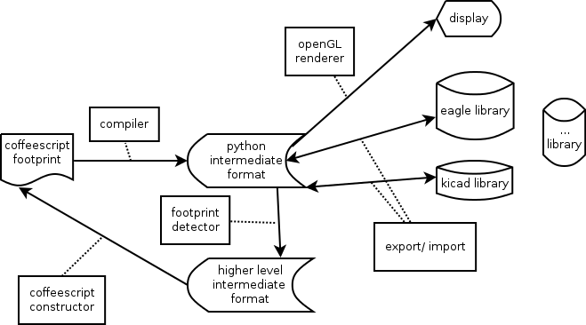

a functional footprint editor
The main goal of madparts is to make electronic footprints in a programmatic way. This is done by making each footprint a small program, giving you huge expressiveness. In order to play nice with existing CAD packages, export and import from/to both eagle and kicad are supported. Import does pattern detection detecting of single, dual or quad package formations. The footprint program is continously compiled, giving instant graphical feedback of your changes as you type. Because each footprint is a separate file, collaboration is easy. Just stick the files in a version management system.
I was getting a bit tired spending tons of mouse-clicks making an electronics footprint in a CAD program. Madparts is a tool which is more compatible with my way of working, and it'll save me time.
When you make a new footprint you start from the specification from the vendor. Then you do calculations to adjust them to your needs, tool limits, ... If your footprint is code you can put the calculations right there in the footprint, documenting your approach for yourself and others. If there turns out to be a problem you can look back and see what went wrong, and make (and document!) the needed changes.
Probably. Most of the time you can just clone an existing footprint and adjust the numbers. There are plenty of examples available to start from.
Coffeescript is compact and I think it is still quite easy to understand by most people with just a tiny bit of coding experience.
Indeed madparts is written in python, so python would be rather trivial to add. However python is much more verbose then coffeescript. Maybe the option to use python will appear some time in the future.
As each footprint is just a file, you can very easily share those files using a version management system like git. (Or use something like dropbox or google drive, if you don't like having a version management system)
This is an excellent idea and I hope someone sets this up and maintains it. Let me know if you do. For now an older subset of my own footprints can be found at madparts-parts
This makes sense if you want to start collaborating with other people via a version management system. You don't want to have to merge files each time someone made a change to one footprint.
This was part of the footprint management system that was integrated in the 1.x releases of madparts. The 2.0 release has removed all this and filenames are up to you again.
You can't yet. It is a feature that is planned but not yet there. For now you can export to eagle or kicad and print from there.
There is a #format meta-tag in each footprint. Madparts uses this to use the right version of the utilities code for that particular version of footprint. The current format is 2.0.
Yes.
Yes.
No. If you're interested in contributing geda support I'm happy to assist.
Maybe, one day :)
Use the issue tracker in github.
Milimeters are used everywhere. You can suffix a number with mi or mil for mils and with in for inches. For example 1in, 6mi. Note that no space is allowed between the number and the suffix. These imperial units are just converted back to milimeter in a preprocessor step and the entire program still works with millimeters.
Using the program should be quite straightforward. A menu bar at the top provides export and other functions. The right side of the program always shows a rendering of the currently selected footprint.
This is the main program. Start it with a .coffee file to edit it. Starting it without a file will pop up the open dialog allow you to select a file.
Use this program to import a footprint. Start it up and it will pop up a dialog asking to open a kicad or eagle library and then allows you to select a footprint to import.
If you saved your footprint to a library, you may find that you can't select the library anymore for adding new parts to a schematic. It is as of yet unclear to me why this is the case. The workaround is to open the library from the library browser and save it. My guess is that the eagle XML parser is picky in some way.
Kicad has two library formats, the old .mod and the new .pretty. Code to support the old format is kept around for legacy reasons but as current kicad has switched to the new format the new format code is more heavily used and has more bugfixes applied. Note that unfortunately kicad caches the .pretty library content so you have to restart kicad to see a newly added footprint. If you just overwrite and existing footprint you can just change the footprint to the same via kicad in pcbnew and it will take the new footprint. I have some ideas to better integrate with Kicad but they are not there yet ;)
Editing footprints is almost real-time. This means that the code is compiled when you stop typing and the result is immediately shown on the display part of the editor. If there is a compilation error an error window will pop up from the bottom of the editor showing the error.
The footprint is automatically saved each time it compiles successfully. If your computer is really slow you may want to turn of automatic compilation in the preferences. You can then do manual compilation with CTRL-F.
If you come from an older version of madparts you may want to check if auto compile is turned on as some older versions shipped with it turned off by default, meaning you have to turn it on yourself.
It is possible to use the madparts-cli program for importing and exporting footprints. Some examples of usage follow.
$ madparts ls examples/ 10644a0b9a3a4f2a8a8b0add2ba7ce21 0603 ... e5bd48346acc4d549d678cb059be64ef TQFP32 9364e38b40644665a3c8c07a5f2f3190 TQFP44
madparts ls SparkFun-LED.lbr APA3010SF4C LED5MM LED3MM LED-1206 LED-0603 ... LED-TRICOLOR-5050-IC
As expected these contain only one module
madparts ls 0603.kicad_mod 0603
This will list all the .kicad_mod modules contained in that directory.
madparts ls offset.pretty/ 0603 MYCONN3 NUM_IV-9
madparts ls Crystals_RevB_20Apr2013.mod Crystal_Round_Horizontal_2mm_RevA_25Apr2012 Crystal_Round_Vertical_3mm_RevA_25Apr2012 Crystal_Round_Vertical_2mm_RevA_25Apr2012 ...
madparts import SparkFun-LED.lbr LED3MM SparkFun-LED.lbr/LED3MM written to c0882a5d7c384ca28ea95fcb051a8994.coffee
As only one footprint is contained in a .kicad_mod file, the second footprint name argument can be left off.
madparts import 0603.kicad_mod 0603.kicad_mod/0603 written to 252619c3322440efab7a8e87f62efeb8.coffee. import a footprint from a kicad .pretty footprint directory madparts import offset.pretty MYCONN3 in dev tree offset.pretty/MYCONN3 written to ef7ab8e1656544fb89baed928d139246.coffee.
madparts import MYCONN3.mod 0603 in dev tree MYCONN3.mod/0603 written to 98111641bea34d01914e192bf5025c62.coffee.
madparts export c0882a5d7c384ca28ea95fcb051a8994.coffee madparts.lbr LED3MM compiled. Exported to madparts.lbr.
madparts export examples/10644a0b9a3a4f2a8a8b0add2ba7ce21.coffee 0603.kicad_mod in dev tree 0603 compiled. Exported to 0603.kicad_mod.
madparts export examples/10644a0b9a3a4f2a8a8b0add2ba7ce21.coffee offset.pretty in dev tree 0603 compiled. Exported to offset.pretty.
This will create a 0603.kicad_mod file in the offset.pretty directory.
madparts export examples/10644a0b9a3a4f2a8a8b0add2ba7ce21.coffee MYCONN3.mod in dev tree 0603 compiled. Exported to MYCONN3.mod.
For the impatient, all the coffeescript constructs can be found here.
For actual usage I suggest looking at the examples or just try things.
Some older documentation is available here.
Also check out this blog post for another detailed example.

Let's look in detail at an example. Here is the full example, we'll go through it part by part below.
#format 1.2 #name TQFP44 #id 9364e38b40644665a3c8c07a5f2f3190 #parent e5bd48346acc4d549d678cb059be64ef #desc TQFP44 example #desc this package is used by e.g. the Atmel ATMEGA1284P-AU footprint = () -> size = 11 half = size / 2 half_line_size = half - 1.5 line_width = 0.25 num_pads = 44 e = 0.8 name = new Name (half + 1.5) value = new Value (-half - 1.5) pad = new Smd pad.dx = 1.67 pad.dy = 0.36 pad.ro = 50 pads = quad pad, num_pads, e, size pads[1-1].ro = 100 silk = silk_square half_line_size, line_width dot = new Disc (line_width) dot.x = -half dot.y = half - 0.7 combine [name, value, pads, silk, dot]
The meta block is special as it is not actual coffeescript code. It contains some meta data about the footprint.
#format 2.0 #name TQFP44 #desc TQFP44 example #desc this package is used by e.g. the Atmel ATMEGA1284P-AU
#format indicates the footprint format. The current active format is 2.0. This tells the program which version of the footprint generating library it should use for executing the footprint.
#name is the short name of the footprint. Multiple footprints are allowed to have the same footprint but it might get confusing :) This is what is used as name when you export to kicad or eagle.
#desc A detailed description of the footprint. Multiple lines can be made by multiple #desc lines.
footprint = () ->
All footprints are coffeescript functions called footprint. Your footprint will always have this line. The lines under this are the coffeescript code for the footprint and MUST be indented. I suggest using 2 spaces.
size = 11 half = size / 2 half_line_size = half - 1.5 line_width = 0.25 num_pads = 44 e = 0.8
Although not mandatory at all, typically you will want to define some constants that can be used within your footprint code. Naming is arbitrary, but some things are typically done. size is the width of the footprint, sometimes also known as between. In this case it will indicate the distance between the middles of opposite pads. e is the distance between pads, ...
name = new Name (half + 1.5) value = new Value (-half - 1.5)
The argument to the constructor is the Y position. Typically you want these centered on the Y-axis. As you can see it uses a constant defined above.
pad = new Smd pad.dx = 1.67 pad.dy = 0.36 pad.ro = 50
Here a simple square surface pad is defined. It is constructed without arguments and then it's dx, dy and ro parameters are set.
pads = quad pad, num_pads, e, size
We use the high-level construct quad here to construct a quad pad footprint.
pads[1-1].ro = 100
For niceness we modify the first pad to have fully rounded corners.
silk = silk_square half_line_size, line_width dot = new Disc (line_width) dot.x = -half dot.y = half - 0.7
We then draw a square and a disk.
combine [name, value, pads, silk, dot]
The last step of a footprint is typically combining everything together in one big list. The program expects such a list. Failure to do so will result in a compile error.
Install the following packages via your distribution package manager:
Download the zipfile from madparts-2.0.1.zip. Unzip the zipfile and execute the madparts.exe contained in the madparts-2.0.1 directory. It might be convenient to associate the .coffee file extension with the madparts.exe.
For OS-X Montain Lion an app is provided. Download it from madparts-2.0.1-osx.zip, unzip and run it. For other variants of OS-X please look in the BUILD.osx file.
All the code lives in github.